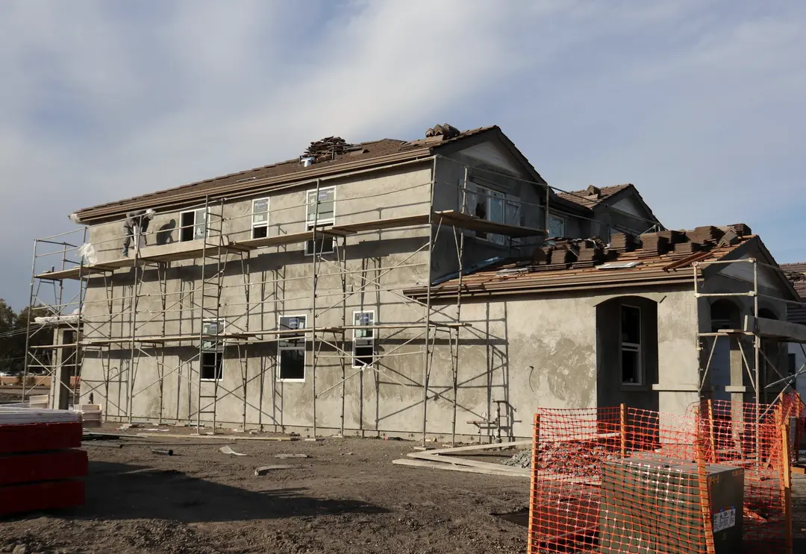
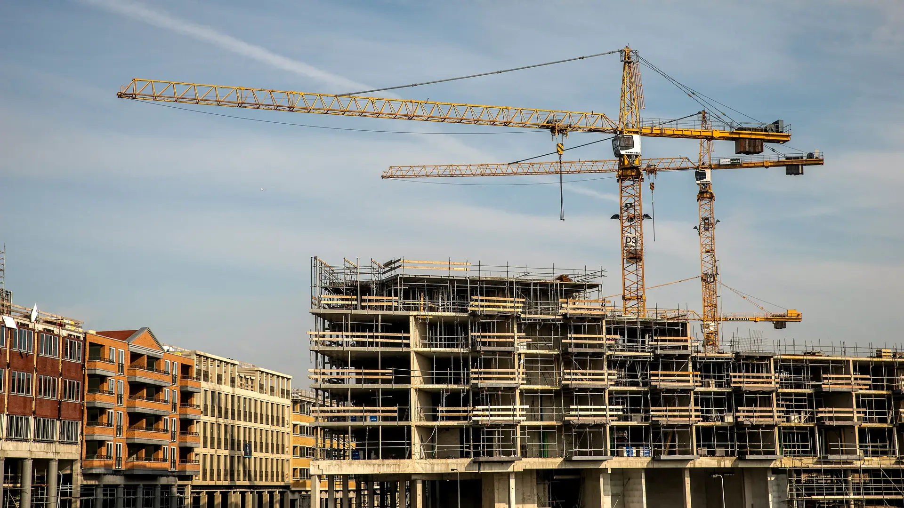
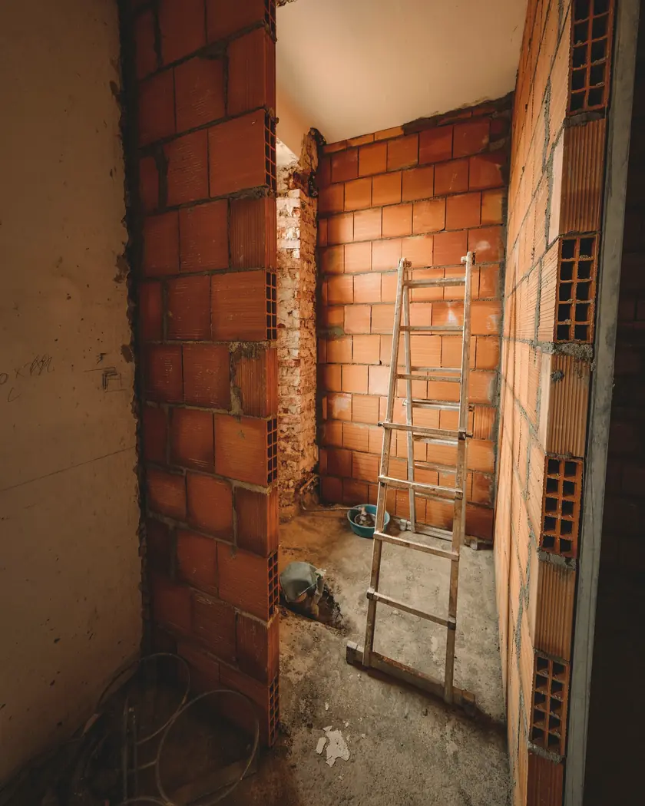
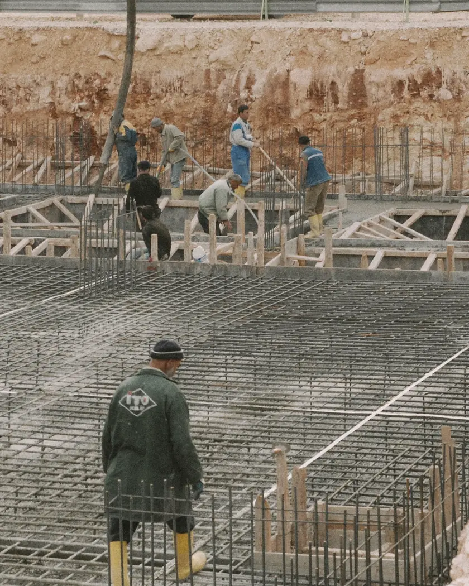
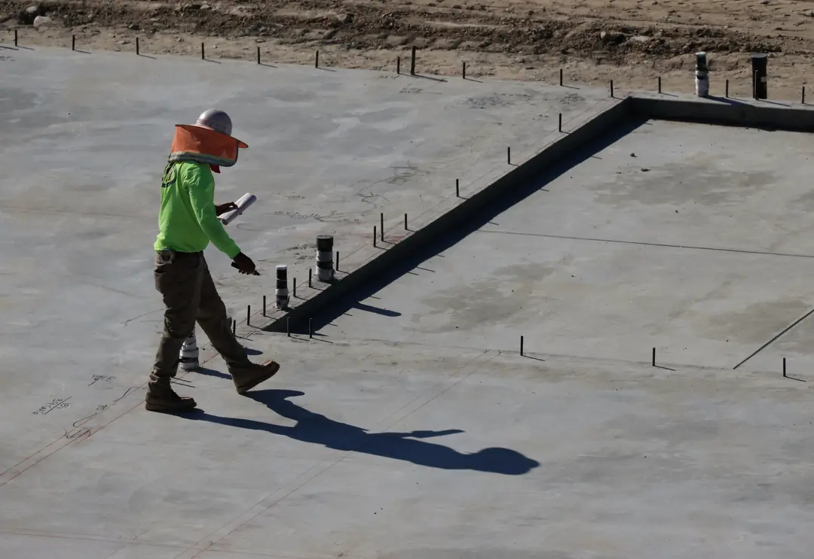
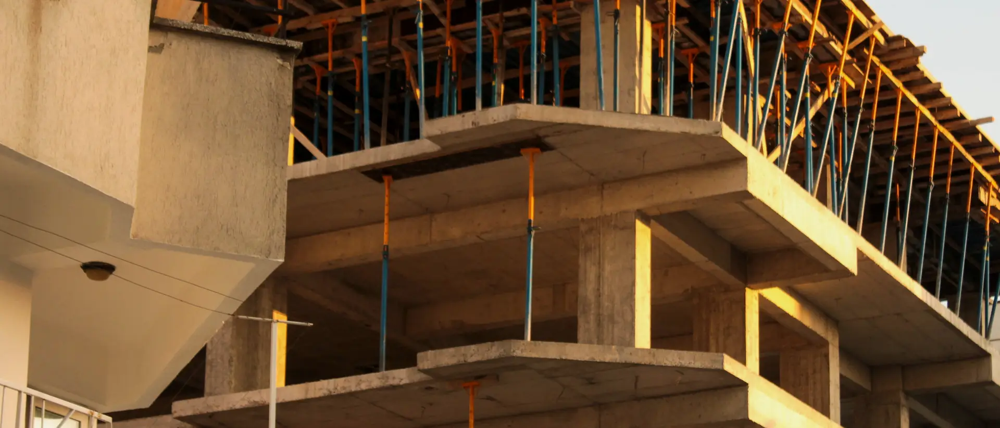
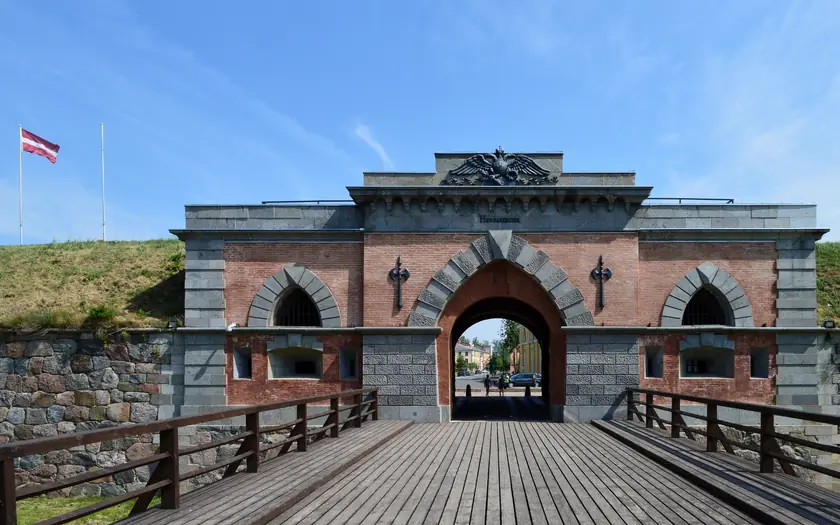

01
JaunbūvesНовые здания
Ēku būvniecība pēc projekta. Darbu apjomu, termiņus un cenu saskaņojam ar pasūtītāju pirms darbu sākuma.Строительство зданий по проекту. Объём, сроки и цену согласуем с заказчиком до начала работ.

Būvkomersants · DaugavpilsСтроительство · Даугавпилс
Ēku būvniecība, būvdarbu vadīšana un būvuzraudzība. Pirms sākam, vienojamies par darbu apjomu, termiņiem un cenu.Строительство зданий, руководство работами и технадзор. До начала работ согласуем объём, сроки и цену.
PakalpojumiУслуги
Uzņēmuma darbība ir ēku būvniecība (NACE 41.00). Būvkomersantu reģistrā mūsu joma ir ēku būvdarbu vadīšana un būvuzraudzība.Деятельность компании: строительство зданий (NACE 41.00). В регистре строительных коммерсантов наша сфера: руководство строительными работами зданий и технадзор.

01
Ēku būvniecība pēc projekta. Darbu apjomu, termiņus un cenu saskaņojam ar pasūtītāju pirms darbu sākuma.Строительство зданий по проекту. Объём, сроки и цену согласуем с заказчиком до начала работ.

02
Būvdarbi esošās ēkās. Kopā apskatām objektu un plānojam darbus tā, lai ēku varētu lietot.Строительные работы в существующих зданиях. Вместе осматриваем объект и планируем работы так, чтобы зданием можно было пользоваться.

03
Būvdarbu vadītājs objektā: darbu secība, materiāli, apakšuzņēmēji, būvdarbu žurnāls un segto darbu akti.Руководитель работ на объекте: порядок работ, материалы, субподрядчики, журнал работ и акты скрытых работ.

04
Pasūtītāja pusē pārbaudām, vai darbi atbilst projektam un normatīviem, un pieņemam segtos darbus, pirms tos aizsedz.На стороне заказчика проверяем соответствие работ проекту и нормам и принимаем скрытые работы до их закрытия.
Aprakstīt objektuОписать объект
Katru posmu pieņemam, pirms to aizsedz nākamais.Каждый этап принимаем до того, как его закроет следующий.
Tā ir būvuzraudzības būtība: segtos darbus pārbauda un pieņem ar aktu, pirms sākas nākamie darbi.В этом суть технадзора: скрытые работы проверяют и принимают по акту до начала следующих работ.
Par mumsО нас
Uzņēmuma dati ir publiski pieejami reģistros, un tie sakrīt ar šajā lapā norādītajiem.Данные компании открыто доступны в реестрах и совпадают с указанными на этой странице.
Būvkomersantu reģistrā kopš 2022. gada ar nr. 17195. Ierakstu un jomu var atrast BIS būvkomersantu reģistrā pēc šī numura.В регистре строительных коммерсантов с 2022 года под № 17195. Запись и сферу можно найти в реестре строительных коммерсантов BIS по этому номеру.
SIA „VJ Grand” reģistrēts Uzņēmumu reģistrā 2021. gada 14. maijā, reģ. nr. 40203317911.SIA „VJ Grand” зарегистрирована в Регистре предприятий 14 мая 2021 года, рег. № 40203317911.
Juridiskā adrese ir Dunduru ielā 27. Objektu var apskatīt kopā, pirms tiek sastādīta tāme.Юридический адрес: улица Дундуру 27. Объект можно осмотреть вместе до составления сметы.

Būvkomersantu reģistrsРегистр строительных коммерсантов
Nr.17195
Kā strādājamКак работаем
Katrā posmā jūs zināt, kas notiek objektā un kāds būs nākamais solis.На каждом этапе вы знаете, что происходит на объекте и каким будет следующий шаг.
Uzrakstiet vai piezvaniet: kur atrodas objekts, kas jādara un vai ir projekts.Напишите или позвоните: где объект, что нужно сделать и есть ли проект.
Izskatām projektu, apskatām objektu un vienojamies par apjomu, termiņiem un cenu.Изучаем проект, смотрим объект и согласуем объём, сроки и цену.
Vadām būvdarbus vai uzraugām tos pasūtītāja pusē. Segtos darbus pieņemam ar aktu.Руководим работами или ведём технадзор на стороне заказчика. Скрытые работы принимаем по акту.
Sakārtojam būvdarbu žurnālu un izpilddokumentāciju, lai ēku varētu nodot ekspluatācijā.Приводим в порядок журнал работ и исполнительную документацию, чтобы здание можно было сдать в эксплуатацию.
KontaktiКонтакты
Uzrakstiet, kas jābūvē vai jāuzrauga, kur atrodas objekts un vai ir projekts. Atbildēsim ar priekšlikumu.Напишите, что нужно построить или проверить, где находится объект и есть ли проект. Ответим с предложением.